International Deadly Lots
home | Booster Warnings by Month | Moderna | Pfizer | Janssen | Moderna (outside USA) | Pfizer (outside USA) | Janssen (outside USA) | International Deadly Lots | 1st & 2nd Doses | Severe | Lethal | Size Matters | Lot Sizes | Time till onset | Second Peak | Lot Expiry Dates | RNA Degradation | Causality | All or Nothing | Clusters | Symptom | Paralysis | Children | Gender | States | Geography | Japan | Case Reports | Whistle Blowers | EMA Leaks | Video Library | Treatment | Background | Download Source Code | Data Cleaning | Donate
If this site is slow loading that's because over 1 million people are accessing it right now. Please use auxillary site HowBadisMyBatch.com which has been set up to cope with this overload. Thankyou.
Severity of Lots for Different Countries
This website has attracted input from researchers around the world, and one of them contributed an insight that enables us to filter VAERS for each foreign country separately. The usefulness of this, is that it enables us to see which batches/lots are causing the most harm in each country - and also if particular countries are being more exposed to harm compared to others. In the non-domestic table of VAERS is a column called SPLTTYPE. The first two letters of each entry in this column denotes the country in accordance with the two letter countrycodes shown here - 2-letter country codes. Unfortunately, we don't have any data for Astrazeneca - only for Moderna, Pfizer and Johnson vaccines.
Here are the results for each country. In each case I have only included lots generating atleast 50 adverse reports. The TOTAL NUMBER OF REPORTS column is the total number of reports found in VAERS for that country, and consequently is a representative sample for that country - illustrating the proportions of disability, death etc.
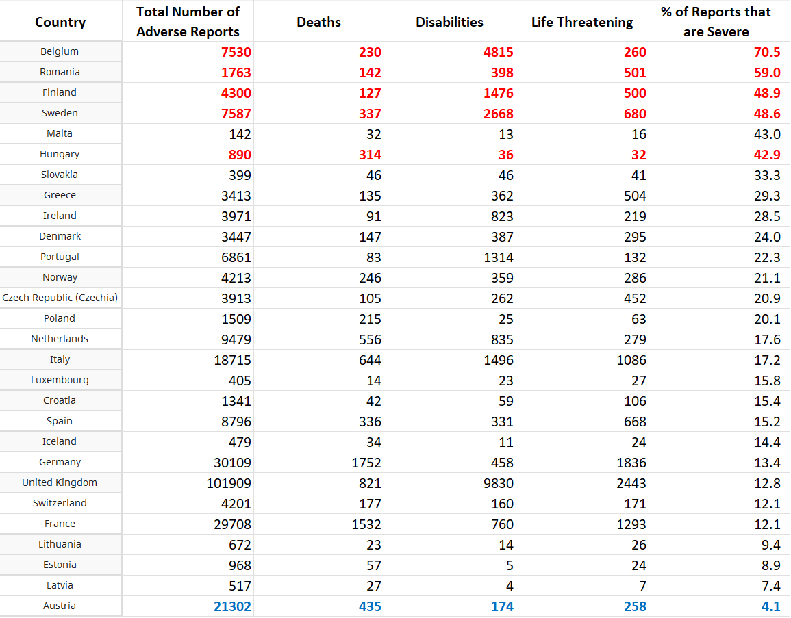
This table will be updated daily with the remaining countries of Europe and other continents. The high rates in some countries may be due to deployment of adulterated vaccines - resulting in higher toxicity. This phenomena requires urgent investigation by researchers in those countries effected. Please contact us to contribute your efforts. In the mean time, until this discrepancy is resolved, I would suggest extreme caution as the default.
Much of the discrepancy seems to be generated by excessive disability following vaccination. We found a similar pattern when we compared domestic deployment within the USA with foreign deployment outside of the USA - see Patterns in Geographical Deployment
Here is a visual way of seeing which countries are having the severest problems with the vaccines - the larger the circle, the greater the number of deaths and disabilities per 1000 adverse reaction reports.
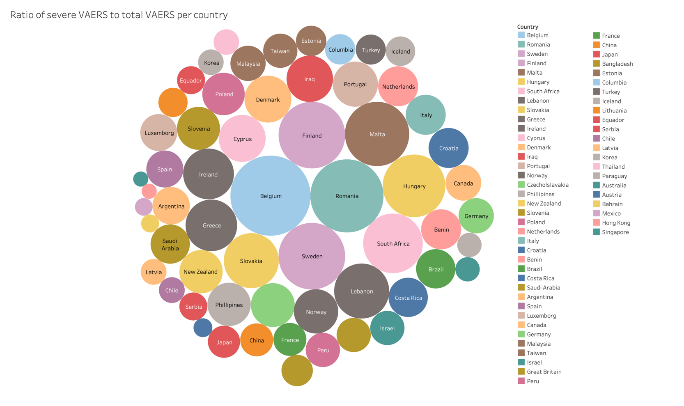
Great Britain
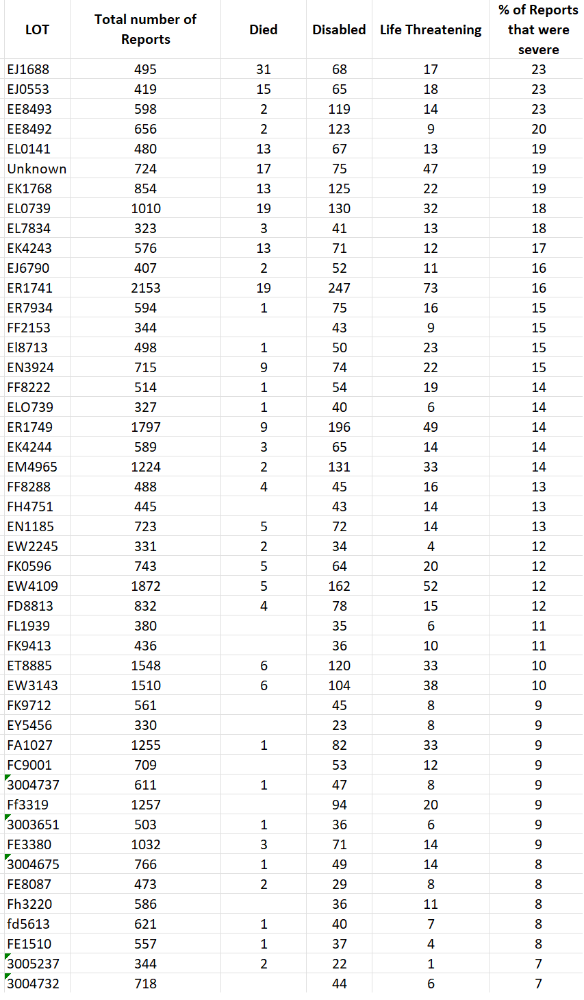
Note that the % of severe reports is quite high for some lots, rising to 23%. This is higher than we found for any lots in the USA.
France
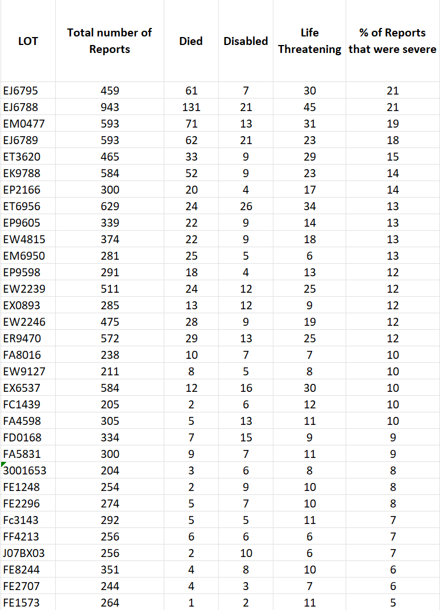
Germany
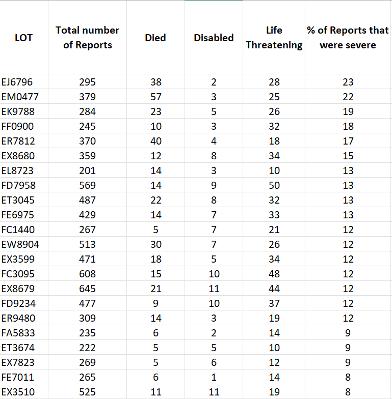
Japan
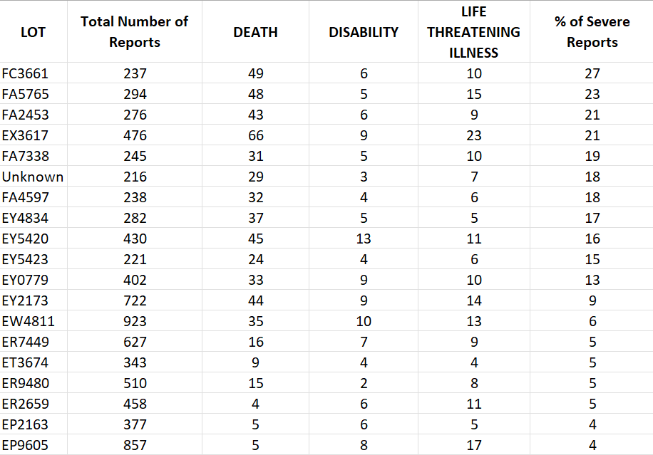
Italy
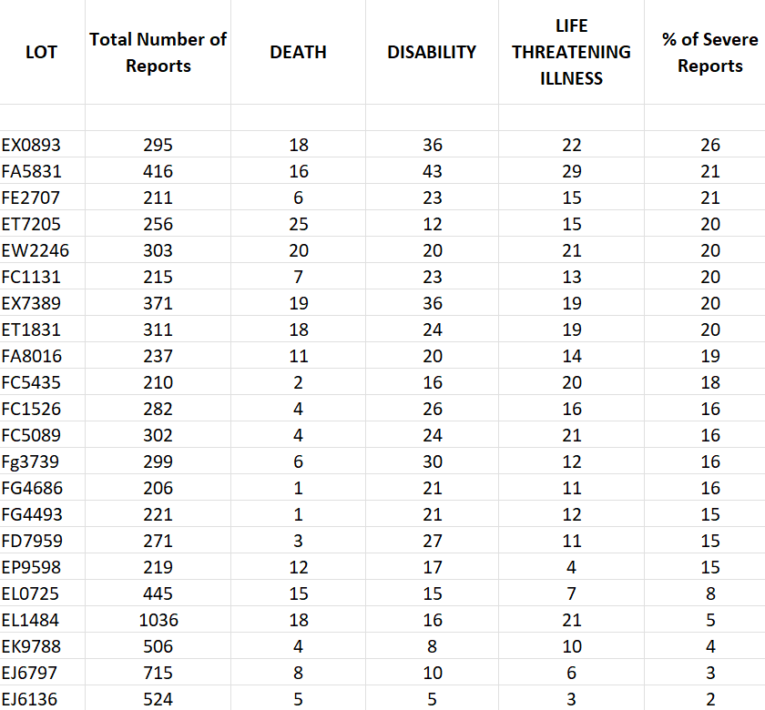
Austria
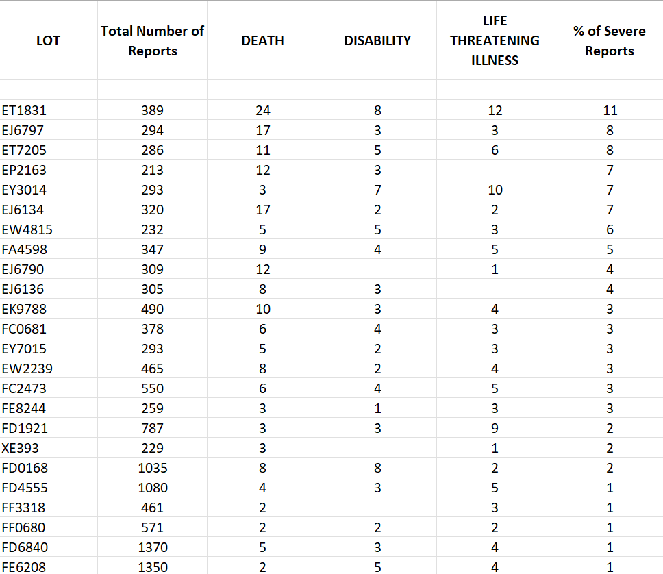
Interestingly, Austria seems to be using a carrot and stick. Having introduced the most punitive coercive policies, they have also reduced toxicity so as to elicit peer pressure from those already vaccinated.Note how their vaccine profile differs markedly from other European countries.
The other countries are watching Austria to see if their policies are effective.
Netherlands
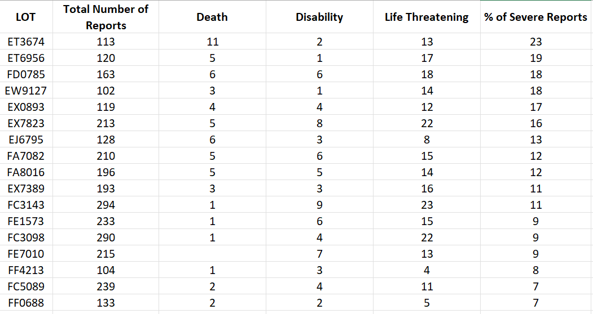
Spain
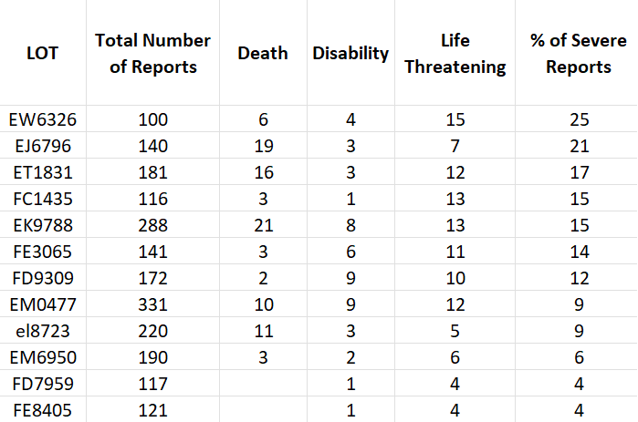
Belgium
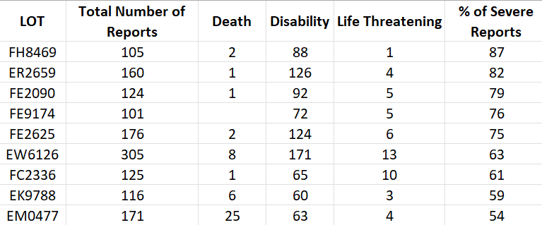
Belgium has extremely high % of reports that are severe. Curiously, these very high percentages result from very high disability rates following vaccination, rather than a high death rate. The death rates seem similar to other countries, but the disability rate is sky high. This is a major safety signal requiring investigation. This effect is not confined to one batch/lot. All lots used here are generating extremely high numbers of severe reports. This level of injury would qualify the vaccine as a bio-weapon - testing at this level restricted to specific countries.
Alarming Discovery About Belgium Results
When I looked at the immediacy of adverse reactions for all ages, the onset of adverse reactions was within 48 hours for 56% of the reports. This was high, but not extremely so. However, one of my colleagues wanted data just on young people of an athletic age (18-35), so I filtered for that age range. On doing so I obtained 887 reports that provided an onset interval. Of these 887 reports, 700 reports had onset within 24 hours - thats 79% of the reports. 806 had onset within 48 hours - thats 90% ! This is a staggeringly high %. It is generally held that a more potent toxin brings about a faster intoxication. What I have stumbled across here is a very important phenomenon that needs more investigation
I decided to filter for just disability in this age range (18-35). I found 881 reports of disability, but only 738 had a record of the number of days till onset. Of these 738 records of disability following vaccination, the onset of disability was within 24 hours for 604 reports (81%) and was within 48 hours for 702 reports (95%). We can therefore say that the onset of disability was very quick for this large number of young people of athletic age. 95% within 48 hours.
Here is a video describing these findings - video
Here is a pdf that you can download and share - The Curious Case of Belgium
Sweden
Sweden, too, has a very high % of reports that are severe - once again, due to a very high number of disabilities induced by the vaccine. Curiously, the death rate following vaccination remains low in comparison. Once again, this phenomenon requires urgent investigation. Team Enigma is collaborating with analysts and researchers in Sweden.
199 reports are of people aged 18-35 who became disabled after taking the vaccine. 126 (63%) of these young people became disabled within 24 hours. 144 (72%) became disabled within 48 hours. These are big percentages. If the vaccines had this immediate effect on young people of athletic age, then they must have been very toxic.
In addition to this, a further 45 young people suffered a life threatening event, and 1 died. 26 (56%) of these life threatening events happened within 24 hours, and 32 (70%) of these events happened within 48 hours of taking the vaccine.
Finland was similar. They had 116 cases of disability following vaccination where the day of onset of disability was known. In 91 of these reports (78%) the disability started within 24 hours of the vaccination. In 99 of these reports (85%) the disability started within 48 hours after the vaccination.
Portugal
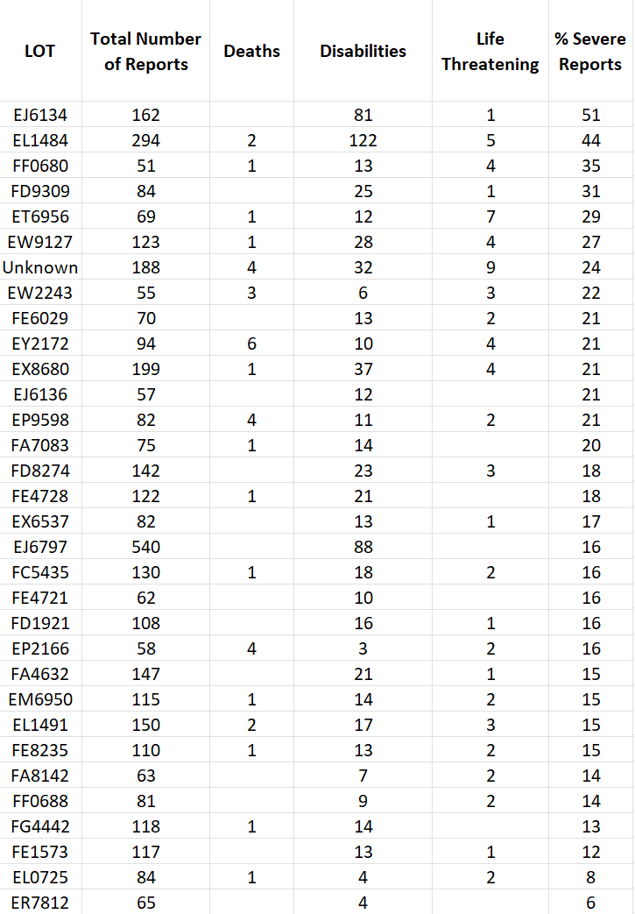
Australia
5061 adverse reports for Australia are found in VAERS. However only 18 of these reports have lot numbers. This is appalling. The Australian Government is hiding and covering up vital information from their own populations. .
It is possible to tell the degree to which a government cares for its population by the care with which they keep medical records pertaining to adverse reactions.
There are reports of 302 people dying, but only 1 of these reports has a lot number. This is incredible negligence on behalf of the government and the medical profession. The people of Australia must start gathering and using their own database - rather than relying on their government or doctors to do that.
This is a callout to anyone in Australia who has database skills. We wish to set up an online database, where people can record their lot number, and adverse reactions. We estimate it would have upwards of 1 million visitors each day. Please contact Team Enigma if you are able to do this. Our email is below.
Canada
In the non-domestic table for VAERS there are only 4240 recorded adverse events (only 1 in 40 adverse events are reported to VAERS, and even fewer are reported by countries outside the USA), however, this may still be taken as a representative sample for the purpose of assessing % severity.
VAERS records 88 deaths, 357 disabilities and 150 life threatening events following vaccination - consequently, the % of severe reports is 14% - approximately the same as the UK. However, please note that this excludes Astrazeneca which may account for the majority of severe effects in Canada.
Of the 4240 adverse reports, only 1544 have recorded their lot number.
Of the 88 who are reported with fatal outcomes, only 10 have lot numbers - which demonstrates a perculiar negligence on the part of Canadian doctors - similar to that found in Australia.
Of the 150 who reported disability, 148 have lot numbers - so it is interesting to see which lot numbers were responsible.
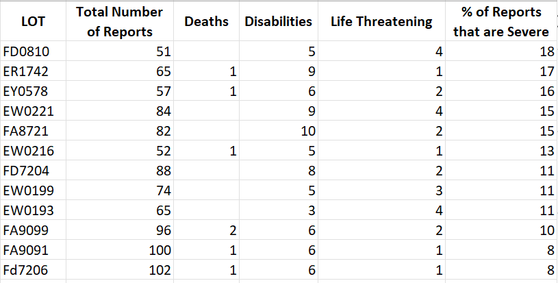
I also looked at the age distribution of severe adverse reactions.
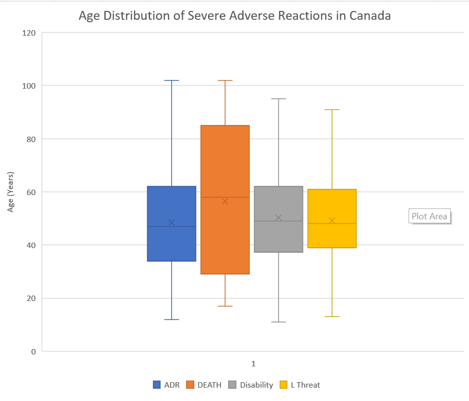
A large % of the deaths and disabilities occurred within 24 hours of taking the vaccine -
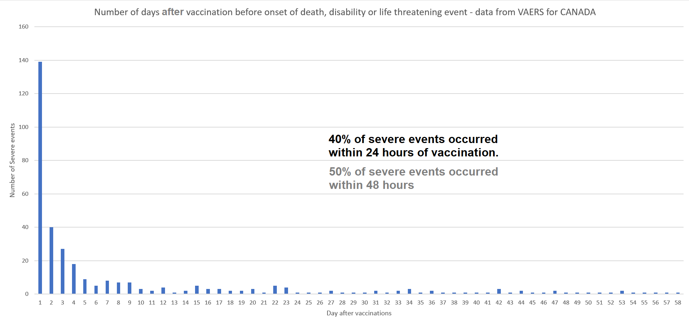
I will add more countries each day.
Chart of Most Toxic Lots
Click image to download larger image
Contact
covidscienceteam@protonmail.com
Created by Craig Paardekooper ©2021